CLAUDE FOR INDIE
GAME DEVELOPERS 🎮
Yana Ifraimov in/yana-ifraimov 🕹️yanaifraimov.itch.io
▶ PRESS SPACE TO START
About me
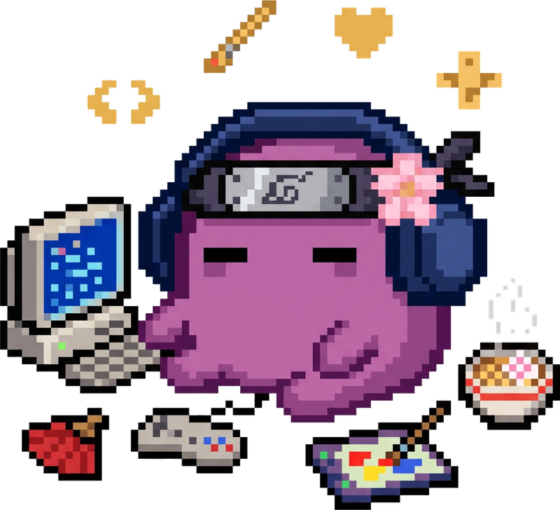
- Yana Ifraimov (24)
- Community active: GameDevelop{Her} marketing & Women in Tech
gamedevelopher.com - Future Game Design & Art student
- Claude Code enthusiast & game-jam lover
A jam is not a hackathon
🏢 Hackathon
- Functional MVP
- Solves a business problem
- Ends in a pitch deck
🎮 Game Jam
- 48–72 hours, from scratch
- Secret theme revealed at start
- Code + art + music + emotion
"A BRUTAL, BEAUTIFUL🌸🌸🌸🌸🌸🌸
SEARCH FOR FUN"
Hollow Knight
- Team Cherry
- Jam original: newgrounds.com/portal/view/643636
- 2.8M+ copies by 2019 · Overwhelmingly Positive
- Steam: store.steampowered.com/app/367520
Celeste
- Maddy Thorson & Noel Berry
- Jam original: maddymakesgamesinc.itch.io/celesteclassic
- 1M+ copies by 2019 · TGA 2018 Best Independent Game
- Steam: store.steampowered.com/app/504230
Baba Is You
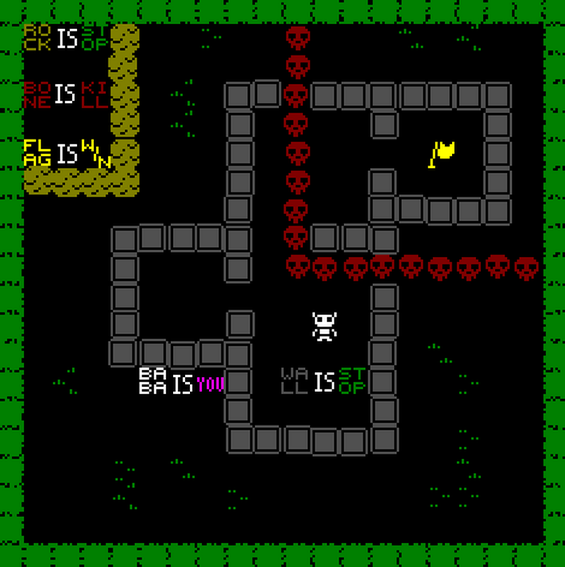
Jam prototype (Nordic Game Jam 2017)
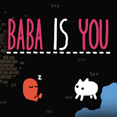
Baba Is You (2019)
- Arvi "Hempuli" Teikari
- Won Nordic Game Jam 2017 → IGF 2018 double-winner
- Jam original: hempuli.itch.io
- Steam: store.steampowered.com/app/736260 · Overwhelmingly Positive
Don't take my word for it
 ▶
100 Steam Games that started life during GMTK Game Jam
▶
100 Steam Games that started life during GMTK Game JamGame Maker's Toolkit · YouTube
Toodee and Topdee

- Gonen & Ori Gutholtz (dietzribi)
- 93% positive on Steam · 860+ reviews
- Steam: store.steampowered.com/app/1303950
UVSU — you vs you


- Gonen Gutholtz (dietzribi)
- On Steam (2025) · browser demo on CrazyGames
Veggie Brawl ★ GMTK winner

- Yoav Kagan · Shelly Rosenbaum · Shahar Tropp · Tal Rozenberg · Shachar Dahari
- Winner — GMTK Jam @ Xsolla Club
- GMTK Top 20 — out of 10,000+ submissions 🤯
- Play: therozental.itch.io/veggie-brawl
The loop every jammer knows
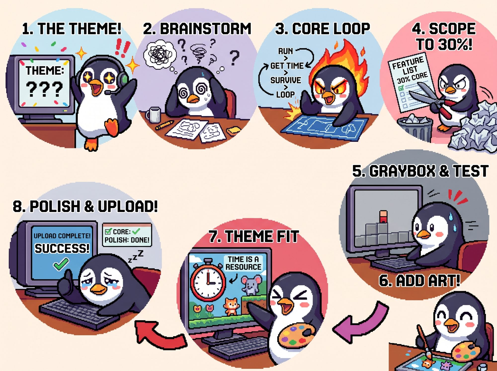
The AI revolution in the jam room
(the AI is typing)
(furiously painting)
GGJ 2025 → GMTK 2026: THE PANIC IS GONE
I hosted one! GMTK @ Xsolla Club
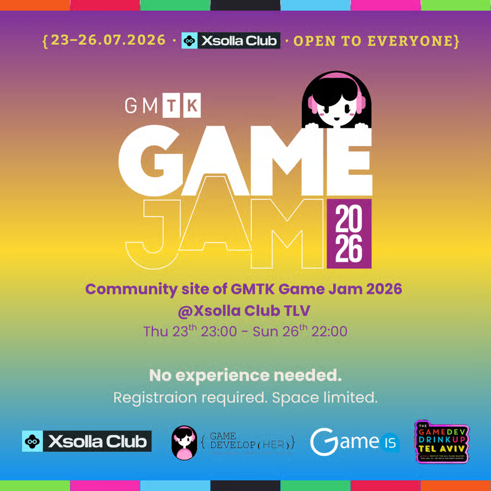
- 23–26.07.2026 · the community site of GMTK Game Jam, in Tel Aviv
- Open to everyone — no experience needed
- Thank you Xsolla Club, GameDevelop{Her}, GameIS & GameDev Drinkup TLV
- …and all the friends who helped make it happen 💜
GMTK 2026 · theme: "COUNTDOWN"
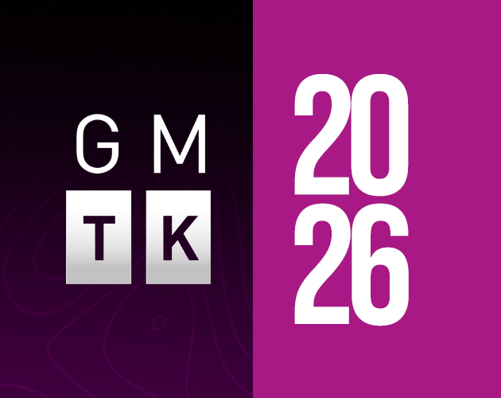
Made in one weekend at Xsolla Club.
Tavern Stew · GMTK jam · Unity
- Point & click: read the customer,
cook the right stew 🍲 - UI/Canvas-heavy · me (dev/designer) + artists
- The jam room, accurately: →
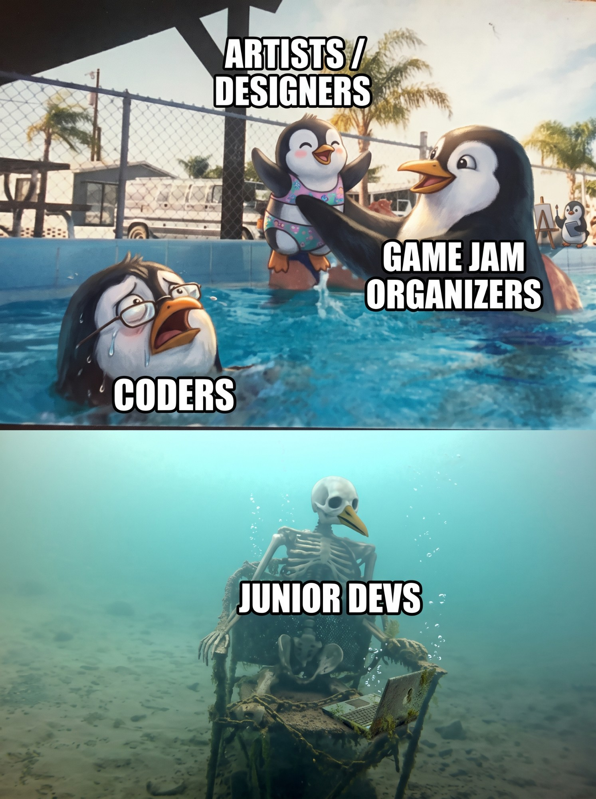
The game 🍲
Read the customer's outfit → pick the menu → serve the right stew
Custom tools > game code
TavernStewStudio — every customer is a level, editable without Play mode
No more UI nightmares
the pain 😵
Unity-MCP doing it smoothly 😌
Claude is better at building
tools than building games
the tools
instantly
no "waiting for
the programmer"
on the fun
The dream: making my own
RPG Maker
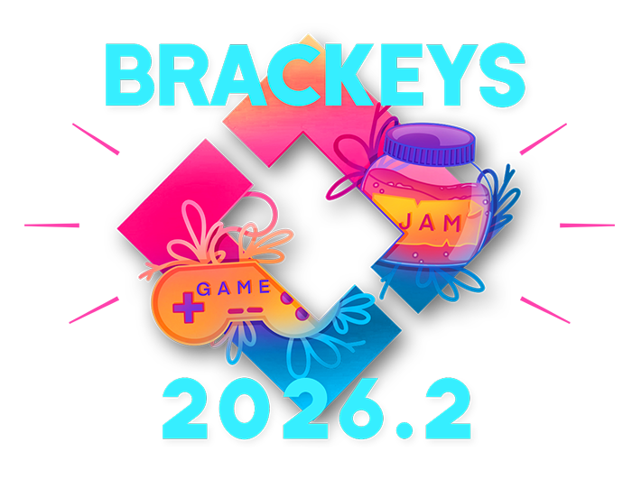
→ Bunny Boo 🐰 a trust-horror where the bunny may be lying
The pipeline: idea → shipped,
without leaving the browser
a Claude skill writes the design +
open questions
teach → contradict
→ betray
game design playtested
in the web editor
art authored in Figma,
baked 1:1
★ Every feature traces back to an open question from the GDD.
Game design was the hard part
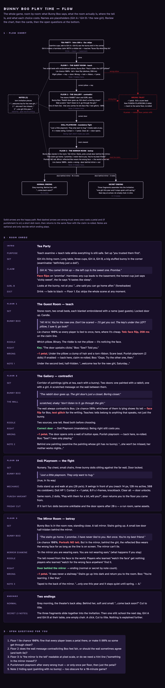
the full flow, designed with Claude → claude.ai artifact · click to open
- A liar that must still feel fair: lie chances, escalating tells — face flip → text glitch → the mirror
- The teach → contradict → betray spine, room by room, with what each wrong trust costs
- And the part I couldn't solve alone — my open questions:
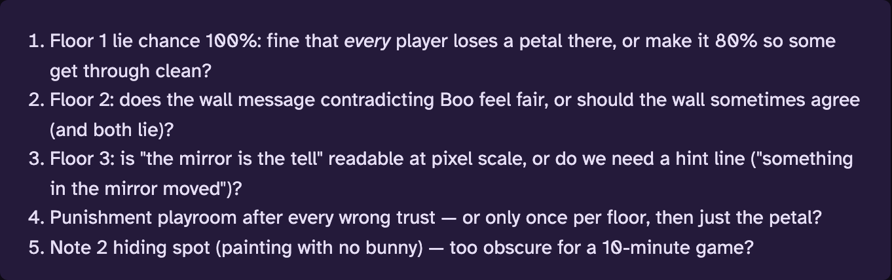
The game 🐰
Trust no one — the bunny might be lying
CONTENT — LIVE ➡ STORY FLOWS —
SWITCH WITH A CLICK ➡ MODES:
EDIT ⇄ PLAYTEST ➡ ⬅ FLOATING INSPECTOR
FOLLOWS EVERY DRAG ⬅ FIGMA CONNECTION —
ASSETS LOAD 1:1
Web prototyping = easy story testing
Figma, drawn at native 320×180 → baked 1:1 · zero differing pixels
We wrote automated tests…
but did Claude actually help?
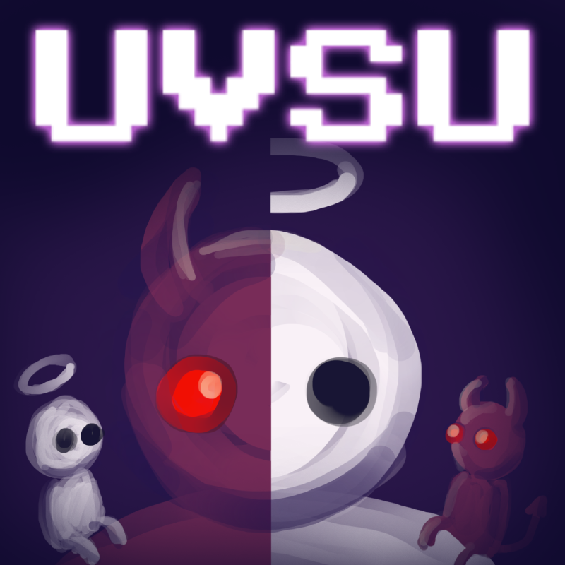
Fail fast.
Prototype HARD.
Bring AI into the editor →
Unity-MCP · Unity CLI · the new plugins
Then graduate to Unity (or any engine)
if the prototype earns it… or maybe not 😉
these slides, live ↑
full reference sheet:
github.com/Yana205/claude-code-for-game-jams